New
Waves
W
Timeline
T
Audit
P
Dataflow
D
Curves
B
Heatmap
H
Follow
G
Feed
L
Help
More
⤓ svg
⤓ png
Out
100%
In
Fit
Layout
↵
or press
N
· add a task from the palette (a verb, or a builtin tool)
Activity
Nika
The workflow canvas · audited before a token is spent.
⚠
The nika engine is not on this machine · every check, graph and run needs it.
⟳ Detect / download
▶ Try the demo · offline, zero keys
＋ New workflow
Examples
Replay a trace
⌘ All commands
Recent in this workspace
What Nika does here
Check · static pre-flight
Preflight · cost · secrets · keys
Run history · flaky · trends
Pre-flight report
Inspect anatomy
Infer permits boundary
Explain the workflow
Embedded spec
Copy AI authoring prompt
Setup MCP + agent rules
Task
◇
infer
▷
exec
◆
invoke
✦
agent
Run
⌄
Δ changed
mock
Stop
↵
▶
0.0s
✕
▶
0:00.0 / 0:00.0